How to See Subatomic Particles in Your Home
What is Hiding in the Tracks?
September 4, 2026
9 minutes of subatomic particles in homemade cloud chamber
The device looks like this:
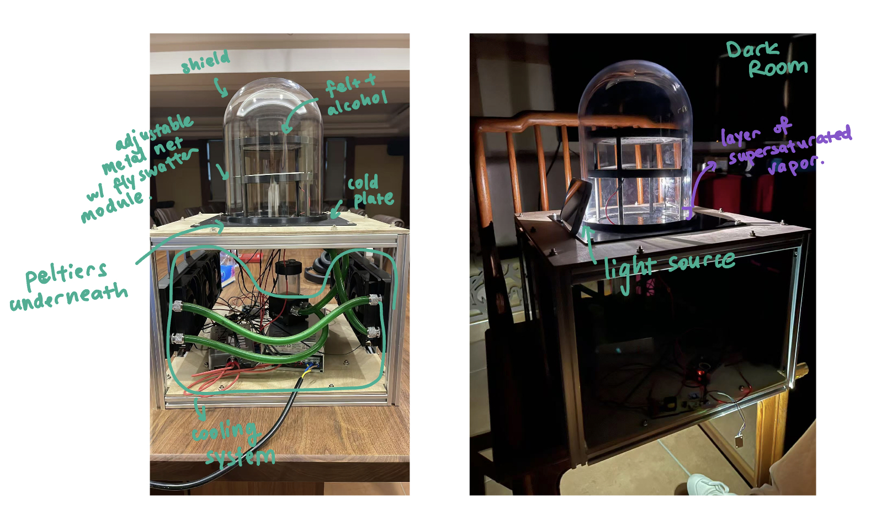
introduction.
This device is called the cloud chamber, a particle detector that discovered the antimatter and led to the quark model. First invented in the 1890s, it played an essential role in 20th century particle physics, making the positron (1932), the muon (1936/1937), the kaon (1947) (a particle made of a quark and an anti-quark), the lambda (a particle made of an up quark, a down quark, and a strange quark) and further strange particles (1940s-1950s) visible to the human eye.
The white tracks you see in the video are tracks left by subatomic particles as they pass through the chamber. A quick way to tell which tracks correspond to which particles is to study the shape of their tracks and how they curve.
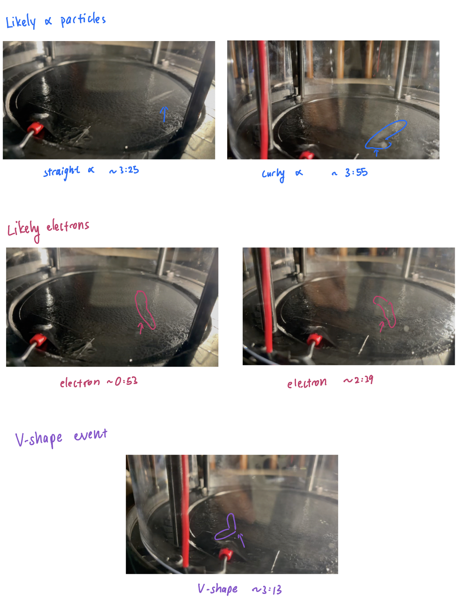
Alpha tracks are thick, bright, and short. Electron (and positron) tracks are thin, often irregular, and kinked. Muon tracks are long, thin, and very straight. Thickness depends on how much charge it has, straightness depends on its momentum, and length depends on how fast it loses energy in the chamber. Kaons, lambdas, and strange particles leave tracks that end in kinks and decays.
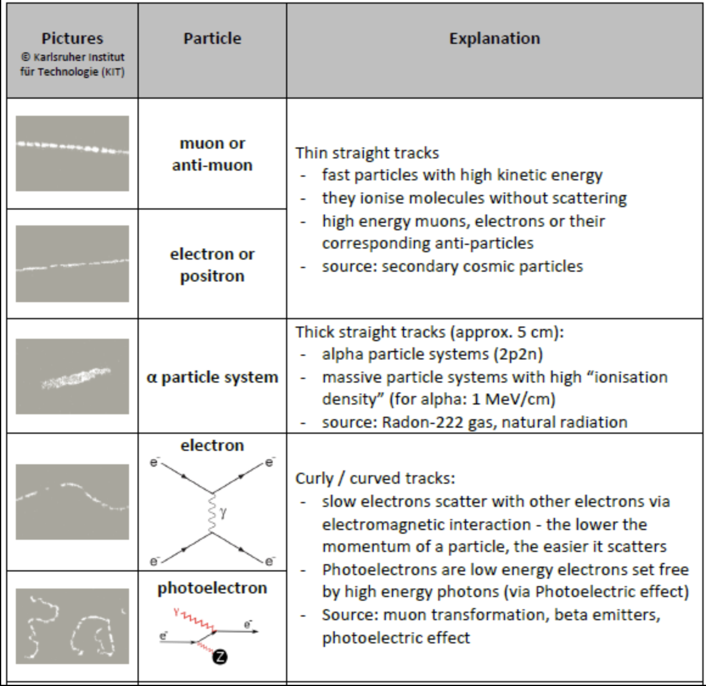
If my chamber has a magnetic field, I would be able to tell you when I see antimatter (a positron) because electrons and positrons curve in different directions. However that is the task of a later project.
Now I will explain to you the mechanism of the chamber and how to build (and how NOT to build) one.
mechanism.
A cloud chamber works by creating a thin layer of supersaturated alcohol vapor above a very cold plate (aim for around or colder than -30 degrees celsius). Alcohol evaporates from a warm felt surface near the top of the chamber and diffuses downward. Near the cold plate, the vapor cools enough that condensation becomes favorable, but droplets still need nucleation sites to form efficiently—just as water droplets in atmospheric clouds form around dust, salt, or other aerosols.
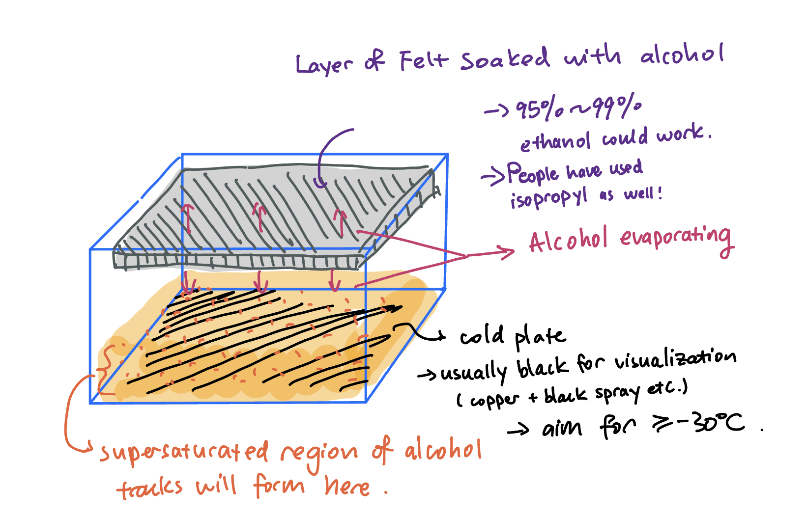
When a charged high-energy particle passes through the chamber, its electric field ionizes alcohol molecules along its path, leaving behind a trail of positive ions and free electrons. These charged particles act as condensation nuclei: nearby polar alcohol molecules cluster around them, forming microscopic liquid droplets. Millions of droplets along the particle’s path scatter light, turning an otherwise invisible particle trajectory into a visible white track.
how to build.
easiest way: dry ice + strong magnet
Follow the instructions here, and attach a strong magnet to the bottom of the plate (place the magnet at the center) to create the magnetic field.
Dry ice stays - 78.5 ° C at room temperature, so it will keep the cold plate comfortably cold.
some rule of thumb estimations
Here is a rule of thumb estimation of how strong the magnetic field should be to generate some curvature (3 cm) for electrons/positrons of different kinetic energy (0.1 Mev to 10 MeV).
For particles above 10keV we want to use the relativistic formula:
The magnetic force is \( F = |q|vB = \frac{\gamma m v^2}{r} \).
Hence the magnetic field strength is given by \(B = \frac{\gamma m v}{|q| r}\).
The relativistic kinetic energy is given by \(E_{kinetic} = (\gamma - 1) m_e c^2\).
so it requires about 0.037 T curve a 0.1 MeV electron by a radius of 3cm, 0.16 T for a 1 MeV one, and 1.17 T for a 10 MeV one.
Here is a rule of thumb estimation of the magnetic field provided by a typical neodymium magnet:
\(B = \frac{B_r}{2}(\frac{D+z}{\sqrt{R^2 + (D+z)^2}} - \frac{z}{\sqrt{R^2 + z^2}})\)
where \(B_r\) stands for the magnetic remanence (typically 1.2-1.4 T for neodymium ones), \(D\) stands for the height of the magnet, \(R\) stands for the radius, and \(z\) stands for the height above the magnet (we can use a magnet 2 cm tall with 3 cm radius).
At 1 cm above the magnet surface B = 0.25 T and at 2 cm above B = 0.15T, so we see that a typical neodymium magnet can curve low energy electrons / positrons relatively well.
DO NOT:
Do not try to store dry ice in your water bottle (because it is constantly sublimating into CO2) even if a block of dry ice appears relatively small and even if after 3 hours nothing bad seems to happen.
There is a nonzero possibility that your water bottle will explode and blow a hole into your bookshelf.
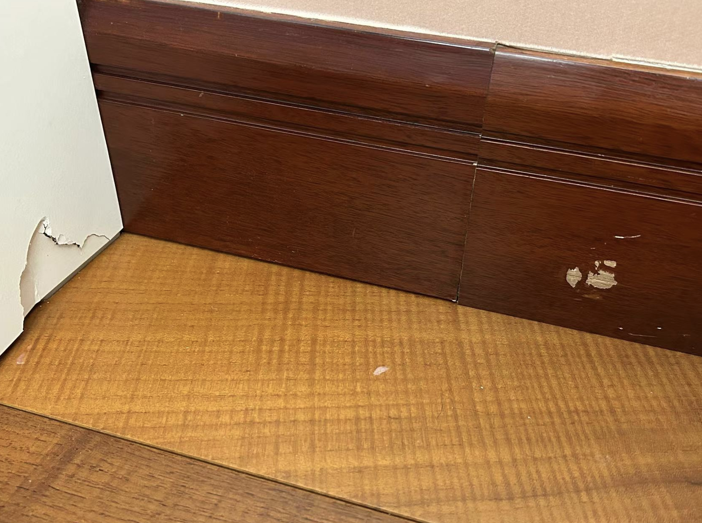
downsides
Dry ice sublimates away and you will have to buy it again every time you want to see the tracks and there is no convenient way to store it in your home (unless you have a -80 degree celsius refrigerator).
medium difficulty: air cooling
Follow the instructions here exactly.
A peltier + air-cooled cloud chamber produces tracks any time you like. No more hazardous dry ice. You can also send the chamber to your friend through mail and it is much more convenient than other methods (as you will see).
side note: how peltiers work
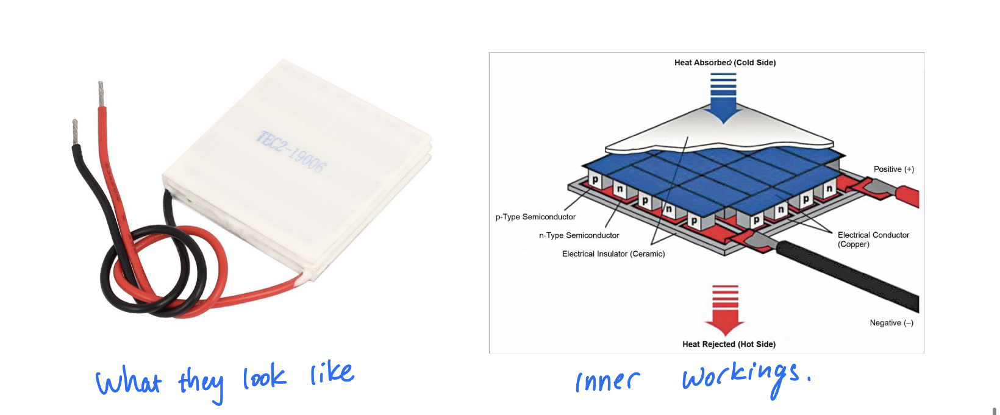
A Peltier is a device that generates a temperature difference across its two sides when an electric current flows through it: one side cools down while the other heats up.
The Peltier effect occurs at junctions between two different conducting materials, usually specially chosen semiconductors. Charge carriers moving through a material carry not only electric charge but also thermal energy.
Different materials transport different amounts of thermal energy per unit charge. Therefore, when charge carriers cross from material A into material B, the amount of energy they carry must change.
At one junction, the carriers need to take up additional energy. They obtain this energy from the surrounding lattice as heat, so the junction cools.
At the other junction, the carriers give up energy to the lattice, so that junction heats.
The phenomenon in which an electric current causes heat to be absorbed at one junction and released at another is called the Peltier effect.
DO NOT:
Do not replace the CPU cooler + fans with a less powerful cooling system (just because a CPU cooler can seem a bit expensive). The hot side of the peltier need to be sufficiently cooled for its cold side to bring the cold plate to the desired temperature. Aim for -30 ° C.
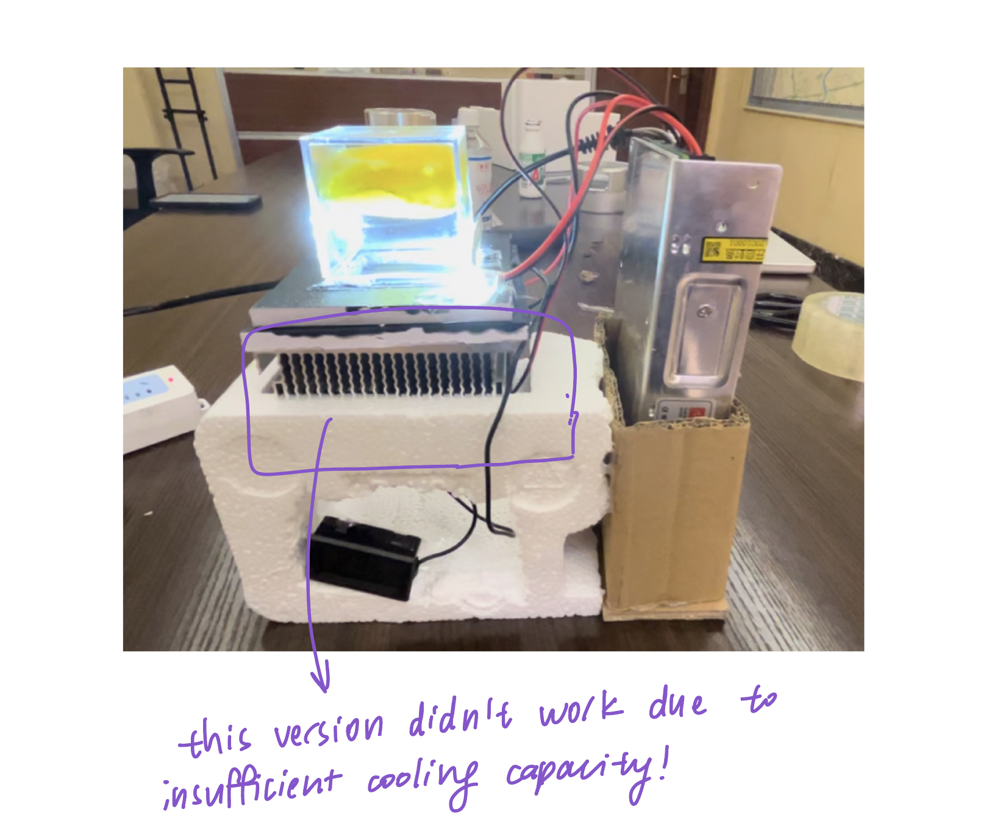
downsides
A CPU cooler + fans only has so much cooling capacity to support one peltier, so the cold plate area is small and there is no space left to put the magnet. Without the magnetic field we can't tell positrons from electrons. No more capability to tell antimatter apart from normal matter!
more difficult: water cooling
This is what generated the video at the beginning of this blog.
To make one, follow the instructions here .
Compared to air cooling, water cooling has larger cooling capacity so you can stick more peltiers to the cold plate, and thus get a larger plate area.
downsides
This design still does not support a magnetic field because there is no practical way to place a magnet at the center of the chamber. You might think this could be solved by designing a support plate with a hole in the middle for a neodymium magnet and placing the peltiers around the rim, but that creates a serious temperature-uniformity problem. Even though copper is a good thermal conductor, the plate temperature can still vary substantially: regions directly above the peltiers may reach around - 25 to - 29 °C, while areas farther away may remain around - 18 to - 20 °C. This uneven cooling can produce strange convection patterns: sometimes you can even see a tornado-like swirling mass of alcohol vapor.
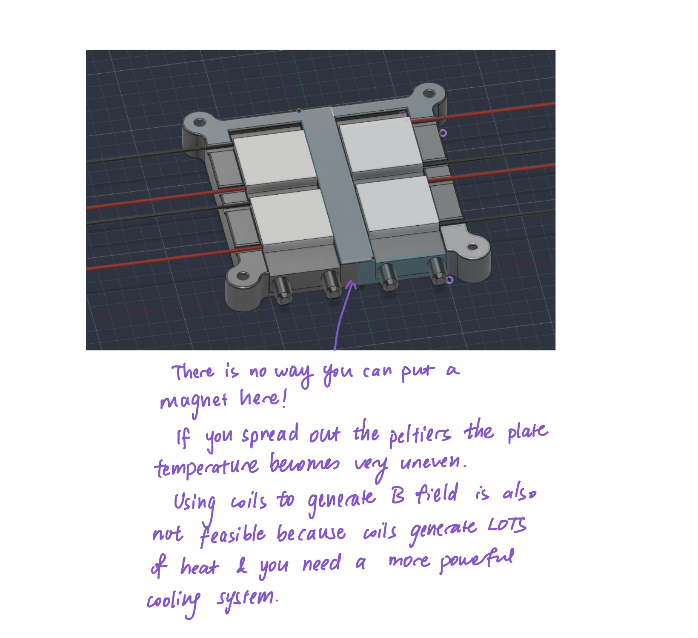
Water loops can also be a bit nasty to deal with. Tubing can slowly creep because of repeated heating and cooling, or simply over time, which makes leaks around the water blocks possible. If you did not design the loop to be drainable from the beginning (as with this design), fixing a leak may require partially disassembling the entire setup (with liquids spewing out of the tubes), which is a hassle. However, now you have the knowledge to set up a water cooled PC case because they use the same principles.
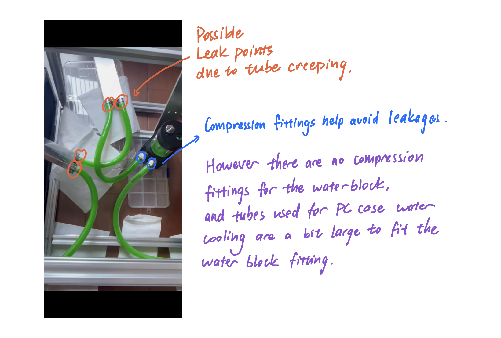
I used a mosquito-swatter high-voltage module to generate the electric field. These modules are generally not designed for continuous operation, so they may overheat or burn out if left on for too long. Be careful.
Finally, the 3D-printed water-block holder may not fit the blocks perfectly. Because the tubing exerts tension on them, the water blocks can work themselves loose or fall out. In my case, stuffing paper between the blocks and the holder helped secure them more firmly.
most difficult: compressor cooling
I haven't tried this one so I can't give a review, but from watching videos it seems like you might have to work with coolants like isobutane or propane (both of which are highly flammable!), purchase a vacuum pump, and be relatively skilled at welding & checking for leaks.
However, if you wire the copper tubing skillfully you might be able to put a magnet in the middle! Also, if you can successfully build a compressor-cooled cloud chamber, you've essentially figured out how to build your own refrigerator and AC.
a zoo of particles and an incomplete model
Shortly after the positron was discovered, physicists realized that positrons and electrons—particles with mass—could annihilate into photons, which have no rest mass. Does that remind you of Einstein’s (E=mc^2)? The reverse could happen too: with enough energy, collisions could create entirely new particles.
Soon, waiting for cosmic rays to deliver energetic particles from nature was no longer enough. Physicists began building particle accelerators, using electric fields to accelerate particles to enormous energies and then smashing them into targets or into one another. To visualize the increasingly complicated collisions, they developed devices such as the bubble chamber, whose dense liquid made particle interactions much easier to observe than in a cloud chamber.
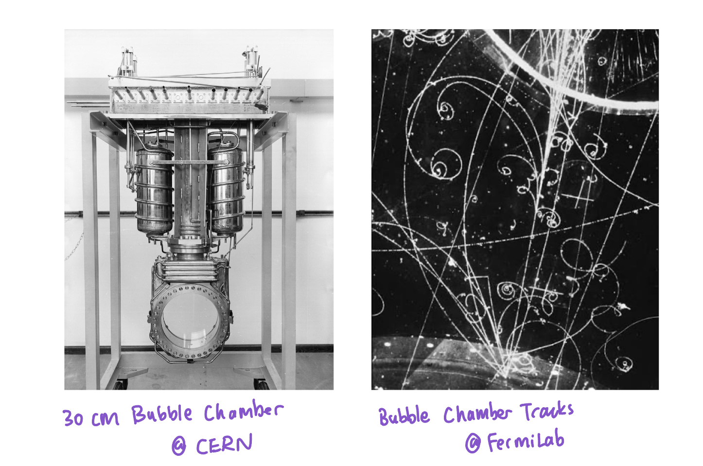
Over time, the accelerators grew from tabletop machines into enormous facilities such as CERN’s Large Hadron Collider, while cloud and bubble chambers gave way to electronic detectors capable of recording millions of collisions.
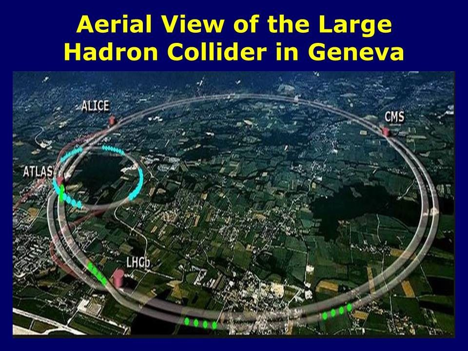
A century later, we have organized a zoo of particles into the Standard Model:
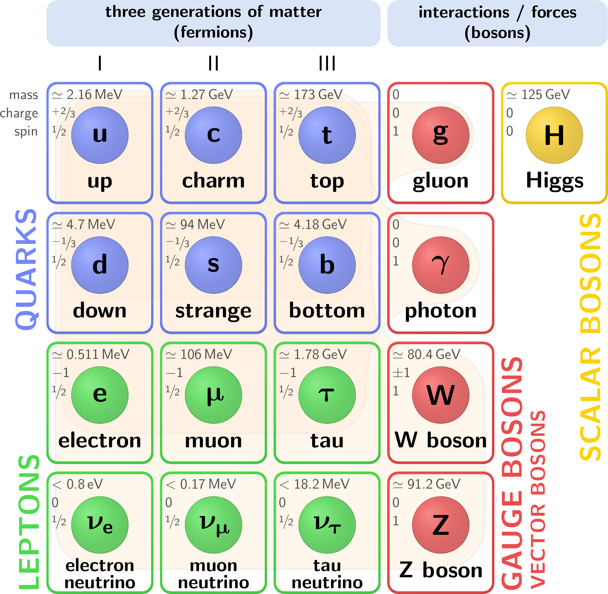
Particles are broadly classified into fermions, which make up matter, and bosons, which include the particles that mediate the fundamental interactions. Fermions come in three generations, although almost all ordinary matter around us is built from the first: up and down quarks, electrons, and electron neutrinos. Up and down quarks interact through gluons to form protons and neutrons. Electrons bind to atomic nuclei primarily through the electromagnetic interaction, mediated by photons, while both quarks and leptons can also participate in the weak interaction, mediated by the W and Z bosons. Electron neutrinos, for example, appear in weak processes such as radioactive beta decay. And underlying all of this is the Higgs field, whose interaction with elementary particles gives many of them their rest mass.
Through this long journey of smashing particles together and watching what comes out, physicists discovered that electromagnetism and the weak interaction are two aspects of a deeper electroweak theory. Together with the strong interaction, they form the Standard Model—our remarkably successful quantum description of three of nature’s four fundamental interactions.
But one force is still missing from the picture: gravity.
Can gravity itself be quantized? If gravitational waves have individual quanta—gravitons—why have we never detected one? And is gravity simply the last piece waiting to be added to this picture, or is the picture itself incomplete?
A century ago, physicists stared into cloud chambers and found particles they did not know existed. Today, we build machines kilometers across and still ask essentially the same question:
What else is hiding in the tracks?
(P.S.: For cloud chamber nerds, this website is particularly valuable. )